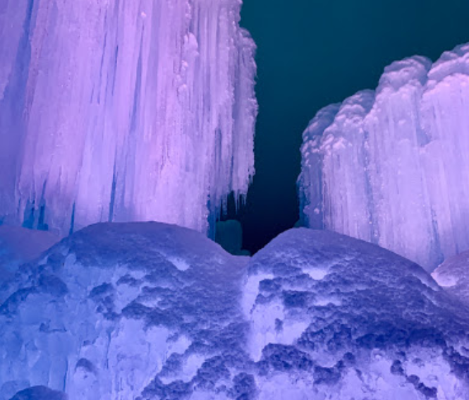
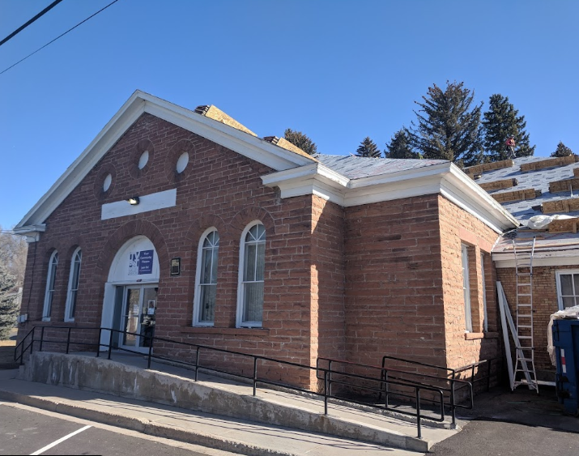

Located at 465 E 1200 S, Heber City, UT 84032
Our local library is filled with useful knowledge and has activities every Monday like the Stem Mondays so depending on the week of your stay you may be able to have you and or your family participate.
Ice Castles

Located at 2002 Olympic Dr, Midway, UT 84049 Once a year the Midway Ice Castles, open to the public so if you visit during december you may have the opportunity to visit them
TVT Theater

The TVT theater Located at 90 N 100 W, Heber City, UT 84032 Puts on plays and is almost always doing a show! So stop by and be thrilled by what they have in store.